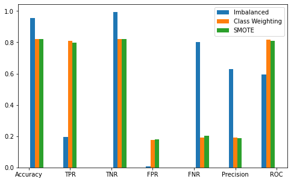
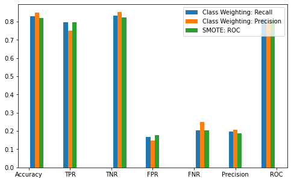

In this project, we have predicted fake job postings from a list of given jobs posted. The dataset has been picked from Kaggle which consists for 17,880 rows of job postings. This document describes Topic Modelling technique used in conjuction with Classification Models to predict fake jobs out of real ones with high accuracy.
The dataset contains:
The dataset is provided with Fraudulent column where value of 1 denotes the job is a fraud and 0 for real jobs.
Dataset contains lot of missing values which are used as a valid observation. It could mean that fake posts often have missing fields.
Following are the steps performed for data engineering:
Exploratory Data Analysis of this dataset can be found at this URL.
It also contains detailed description of various analysis and insights found about the data.
We have used topic Latent Dirichlet Allocation (LDA) to find the number of topics and generate probability of each row. Later, we have used this extra feature in our classification models explained later.
Sections of the code is adapted from link.
Here are the steps performed in Topic Modeling
Topic Coherence is the degree of sementic similarity between high scoring words in the topic. It is modern alternative to Perplexity which is how surprised a model is by the new data (normalized log-likelihood of held out test data).
CV_coherence is a “measure based on sliding window, one-set segmentation of the top words and an indirect confirmation measure that uses Normalized Pointwise Mutual Information (NPMI) and cosine similarity.” Link
Parameters:
From Link: (assuming symmetric data), alpha represents document-topic density - with higher alpha, documents are made up of more topics and with lower alpha, documents contains fewer topics. Beta represents topic-word density - with high beta, topics are made up of most of the words in the corpus, and with low beta, they consists of few words.
Maximum coherence score with 22 topics.
The topics visualization can be found at [link].
Following are the steps performed:
SMOTE sampling on the training data such that even number of observations with each class. This function also does 80/20 train/test split.
SMOTE: synethic minority over-sampling technique
Synthesize new examples for the minority class rather than oversample, which doesn’t add any new information.
“… SMOTE first selects a minority class instance a at random and finds its k nearest minority class neighbors. The synthetic instance is then created by choosing one of the k nearest neighbors b at random and connecting a and b to form a line segment in the feature space. The synthetic instances are generated as a convex combination of the two chosen instances a and b”
SMOTE sampling on training data:
We have used three versions:
| Metric | Value |
|---|---|
| Accuracy | 0.9551101072840203 |
| TPR Recall | 0.19653179190751446 |
| TNR | 0.9940635203324428 |
| FPR | 0.005936479667557139 |
| FNR | 0.8034682080924855 |
| Precision | 0.6296296296296297 |
| Area under ROC | 0.5952976561199786 |
| Area under PR | 0.16298560467949763 |
| Metric | Value |
|---|---|
| Accuracy | 0.8215697346132129 |
| TPR Recall | 0.8092485549132948 |
| TNR | 0.8222024339566637 |
| FPR | 0.1777975660433363 |
| FNR | 0.1907514450867052 |
| Precision | 0.18944519621109607 |
| Area under ROC | 0.8157254944349792 |
| Area under PR | 0.16262502145543048 |
| Metric | Value |
|---|---|
| Accuracy | 0.8204404291360813 |
| TPR Recall | 0.7976878612716763 |
| TNR | 0.8216087859899079 |
| FPR | 0.178391214010092 |
| FNR | 0.2023121387283237 |
| Precision | 0.18673883626522328 |
| Area under ROC | 0.8096483236307922 |
| Area under PR | 0.1588407258416689 |
We can see that imbalanced model is heavily biased towards accuracy and precision, not recall.
SMOTE and class weighting are very similar.

Iterations: repeat the following with each of these 4 scoring metrics: roc auc, accuracy, precision, recall
Insights:
Best: Recall or precision
Insights:
Best: ROC
Insights:

Very similar with some tradeoffs. Ultimately choosing SMOTE ROC as best model because most balanced between tradeoffs. The benefits of class weighting precision are small (precision, FPR) and worse in many areas (FNR, TPR)
Also, SMOTE was consistent across all 4 metrics and thus is a very robust model, likely would perform well on new data.
The lines show the 0.5 threshold. The threshold is appropriate because it reaches close to the top left of the graph and thus has a good tradeoff between FPR and TPR
Code modified from https://www.analyticsvidhya.com/blog/2016/03/complete-guide-parameter-tuning-xgboost-with-codes-python/ and https://machinelearningmastery.com/xgboost-for-imbalanced-classification/
Specifically, guidance in how to and in what order to tune parameters from https://www.analyticsvidhya.com/blog/2016/03/complete-guide-parameter-tuning-xgboost-with-codes-python/.
We did train/test split + SMOTE sampling.
No need to drop one level of dummies in this case.
Results with all default values. 3 iterations:
| Metric | Value |
|---|---|
| Accuracy | 0.9757199322416714 |
| TPR/recall | 0.5895953757225434 |
| TNR | 0.9955476402493322 |
| FPR | 0.004452359750667854 |
| FNR | 0.41040462427745666 |
| Precision | 0.8717948717948718 |
| Area under ROC | 0.7925715079859378 |
| Area Under PR | 0.5340513972079693 |
| Metric | Value |
|---|---|
| Accuracy | 0.9717673630717109 |
| TPR/recall | 0.6936416184971098 |
| TNR | 0.9860492727812408 |
| FPR | 0.013950727218759276 |
| FNR | 0.3063583815028902 |
| Precision | 0.718562874251497 |
| Area under ROC | 0.8398454456391753 |
| Area Under PR | 0.5133884126597368 |
| Metric | Value |
|---|---|
| Accuracy | 0.9599096555618295 |
| TPR/recall | 0.815028901734104 |
| TNR | 0.9673493618284358 |
| FPR | 0.032650638171564265 |
| FNR | 0.18497109826589594 |
| Precision | 0.5617529880478087 |
| Area under ROC | 0.89118913178127 |
| Area Under PR | 0.4668793647115093 |
Insights:
Ideally would do full grid search with all parameters, but resource needs too much so doing sequential tuning instead.
Tune most parameters with high learning rate (0.3) and low number of estimators (100) so that reasonable amount of time. Last step is to select correct learning rate and estimator number.
Parameters:
Fit models with each of the 4 scoring metrics for both SMOTE and class weighted data.
Insights:
Best: ROC
Insights:
Best: ROC
Class Weighting better in all categories and less overfit.
Insights:
XGBoost overall better for accuracy, TNR, precision, FPR, ROC. Worse for TPR and FNR, but by small amounts
Best model: XGBoost, class weighting, ROC scoring
Thoughts on tradeoffs:
Originally thought we wanted to minimize FNR/maximize recall so that job seekers don’t think a fake job is real. However, never do a good job in any model of really minimizing FNR.
However, can do a very good job of maximizing precision and minimizing FPR. Thus very rarely predict a real job is fake. This actually has benefits to the job seekers (don’t miss out on opportunities) and the companies (don’t have their posts labeled as fake).
Would need disclaimers that this does not guarentee the post is not fake, just provides a first pass to filter some out. Please still be vigilant.
| Metric | Value |
|---|---|
| Accuracy | 0.9776962168266516 |
| TPR/recall | 0.7167630057803468 |
| TNR | 0.9910952804986642 |
| FPR | 0.008904719501335707 |
| FNR | 0.2832369942196532 |
| Precision | 0.8051948051948052 |
| Area under ROC | 0.8539291431395054 |
| Area Under PR | 0.5909678409050111 |
[link]